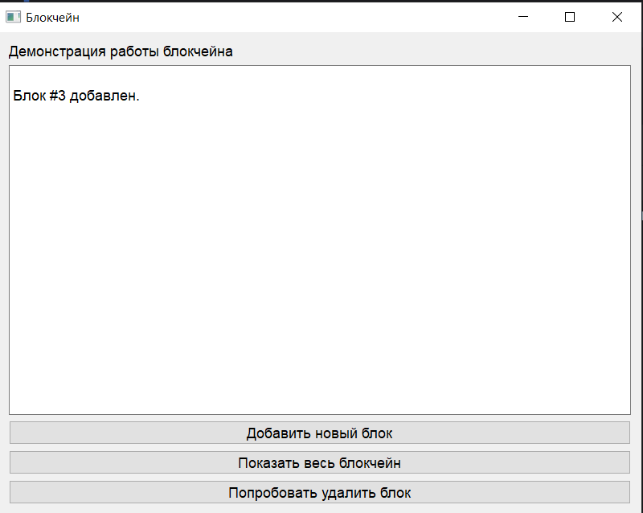

Техническое руководство по созданию приложения «Интерфейс работы с блокчейном»
Студент: Ланщеков Егор Алексеевич
Группа: 241-326
Введение
Данное руководство описывает процесс создания учебного программного продукта, реализующего работу с упрощённой моделью блокчейна в графическом интерфейсе пользователя на базе библиотеки PyQt5.
Приложение позволяет:
- Добавлять новые блоки в блокчейн.
- Просматривать текущее состояние цепочки.
- Демонстрировать принцип неизменяемости блокчейна через кнопку «Попробовать удалить блок», выводящую сообщение об ошибке.
Проект предназначен для учебных целей и демонстрирует принципы технологии блокчейн в наглядной форме.
Архитектура приложения
Приложение состоит из двух основных частей:
1. Логика блокчейна (backend):
- Определение структуры блока (Block).
- Реализация функций создания генезис-блока и добавления новых блоков.
- Вычисление хэшей для связи блоков в единую цепочку.
2. Графический интерфейс (frontend):
- Построен на PyQt5.
- Содержит три кнопки и текстовое поле для вывода сообщений.
- Обеспечивает взаимодействие пользователя с блокчейном.

Основные элементы приложения
1. Класс Block
Содержит данные о блоке:
- index — порядковый номер блока.
- timestamp — время создания блока.
- data — полезные данные.
- previous_hash — хэш предыдущего блока.
- hash — собственный хэш.
2. Основные функции
create_genesis_block()— создаёт первый блок.next_block()— формирует новый блок, используя предыдущий.
3. Графический интерфейс (PyQt5)
GUI состоит из следующих элементов:
- Метка с описанием приложения.
- Текстовое поле (QTextEdit) для вывода сообщений и списка блоков.
- Кнопка «Добавить новый блок» — добавляет блок в цепочку.
- Кнопка «Показать весь блокчейн» — выводит список всех блоков.
- Кнопка «Попробовать удалить блок» — демонстрационная функция, выводящая сообщение об ошибке.
Логика работы
При запуске программы создаётся генезис-блок.
Пользователь может нажимать кнопки:
- при добавлении нового блока цепочка увеличивается, и выводится сообщение о его добавлении;
- при просмотре отображаются все блоки;
- при попытке удаления появляется сообщение об ошибке.
Пример логики работы программы при добавлении нового блока:

Модификация (творческая часть)
В рамках творческой модификации была реализована дополнительная кнопка «Попробовать удалить блок». Её цель — показать одно из фундаментальных свойств технологии блокчейн: неизменяемость цепочки блоков.
При нажатии данной кнопки приложение выводит сообщение:
ОШИБКА: структура блокчейна неизменяема.
Таким образом, пользователь на практике убеждается, что после добавления блоков их удаление или модификация невозможно без нарушения целостности всей цепочки.
Таблица функций приложения:
| Кнопка | Действие | Результат на экране |
|---|---|---|
| Добавить новый блок | Создание нового блока | Сообщение о добавлении, увеличение количества блоков |
| Показать весь блокчейн | Вывод списка всех блоков | Текстовое отображение цепочки блоков |
| Попробовать удалить блок | Демонстрация невозможности изменения | Сообщение об ошибке |
Скриншоты программы




Заключение
Разработанное приложение служит учебным инструментом для демонстрации работы технологии блокчейн в упрощённой форме. Использование PyQt5 позволяет создать наглядный интерфейс, что облегчает понимание принципов децентрализованного хранения данных и неизменяемости структуры блокчейна.